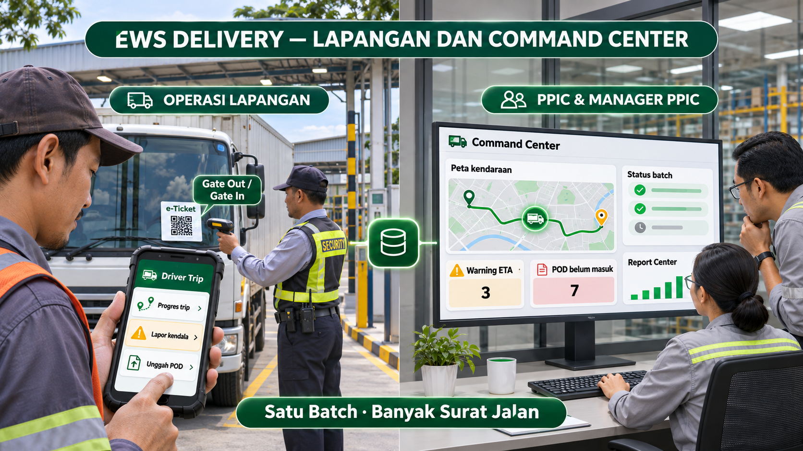
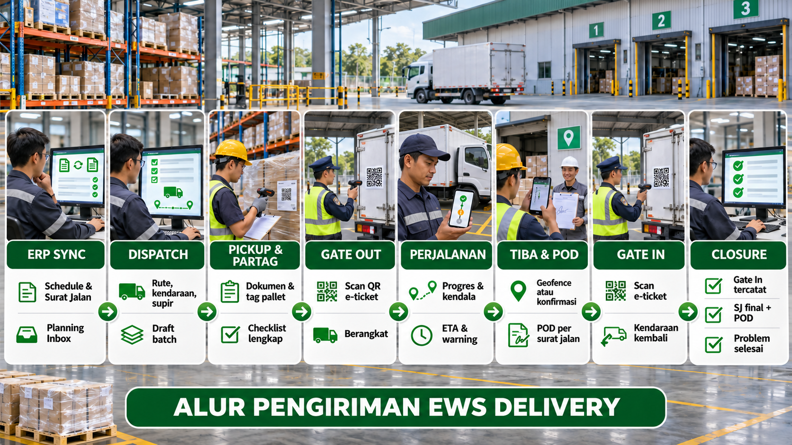
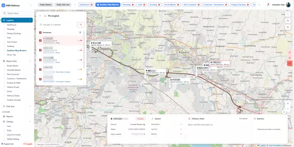
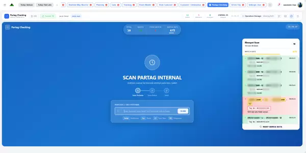
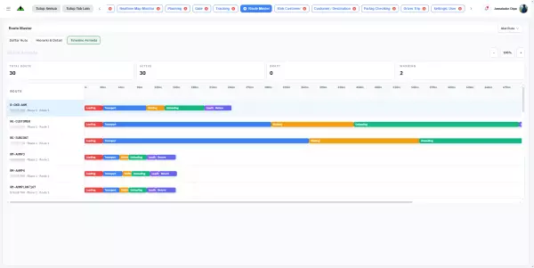
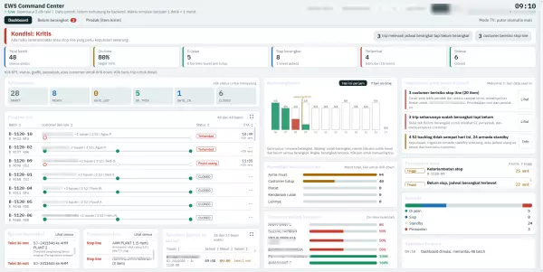

System Development · Logistics Early Warning
EWS Delivery
A logistics control platform designed to connect PPIC planning with field delivery execution, giving teams one operational view of dispatch, gate activity, driver trips, realtime fleet position, ETA risk, part-tag verification, proof of delivery, and customer stop-line exposure.
Field Execution Meets the Command Center

The operating model links truck and driver activity at the gate with PPIC and management visibility. A delivery batch can contain multiple delivery notes, while route progress, issues, ETA warnings, and POD completeness remain visible from dispatch through closure.
Business Problem
Delivery control becomes reactive when planning, gate records, vehicle progress, customer schedules, part-tag checks, and proof of delivery are separated. PPIC needs earlier signals for trips that have not departed, ETA drift, incomplete checks, customer closing-time exposure, and delivery conditions that can create a stop-line risk.
My Role & Ownership
Independently translated the logistics process into an end-to-end application concept and operational UI: information architecture, planning and master-data flow, route lifecycle, scan validation, map monitoring, exception prioritization, dashboard interaction, responsive delivery views, testing, and iterative refinement.
Operational Control Model
Planning & Dispatch
ERP/data synchronization, planning inbox, batch preparation, route, customer, product, vehicle, driver, stock, checklist, and delivery-note context.
Field & Trip Execution
Part-tag verification, Gate Out, driver trip, tracking, realtime map, progress events, Gate In, delivery status, and POD handling.
Early Warning & Decision
Late-departure alerts, ETA and route exposure, customer closing-time risk, stop-line prioritization, warning severity, delay causes, and drill-down decisions.
End-to-End Delivery Workflow

- ERP / Data SyncSchedule and delivery-note data enter the planning inbox.
- DispatchPPIC groups the route, vehicle, driver, customer stops, and delivery documents.
- Pickup & Part-tagBox or pallet tags and delivery readiness are verified before departure.
- Gate OutThe e-ticket event records the start of the delivery trip.
- Trip MonitoringRoute progress, ETA, driver constraints, and exceptions are monitored.
- Arrival & PODDelivery confirmation is maintained per delivery note and destination.
- Gate InThe return event closes the physical vehicle loop.
- ClosureFinal delivery documents, POD, and unresolved problems are reconciled.
Technical Capabilities
Browser-based operations portal, interactive map monitoring, barcode and part-tag scanner workflow, role-oriented navigation, master-data controls, route timeline visualization, operational event tracking, dashboard drill-down, data synchronization controls, reports, and privacy-safe portfolio presentation.
Current Status
Status: system development with simulation-driven operational validation. The current portfolio screens demonstrate the target process, exception logic, command-center visibility, and user interaction. Sample and sanitized data are used; production connectivity is not claimed here.
Selected System Screens




Privacy note: screenshots and data shown are sanitized or simulated for portfolio use. Customer names, vehicle identities, driver information, internal endpoints, credentials, and private business data are excluded or obscured.